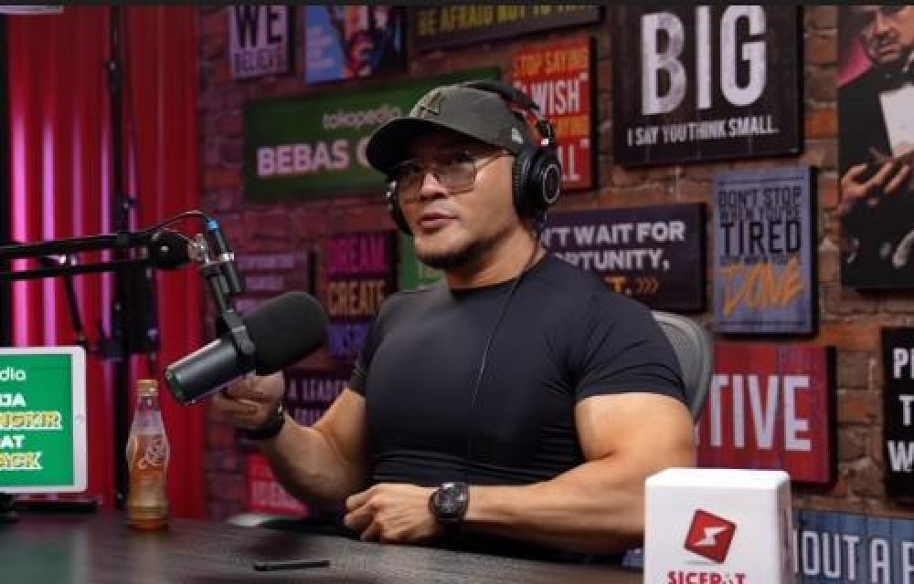
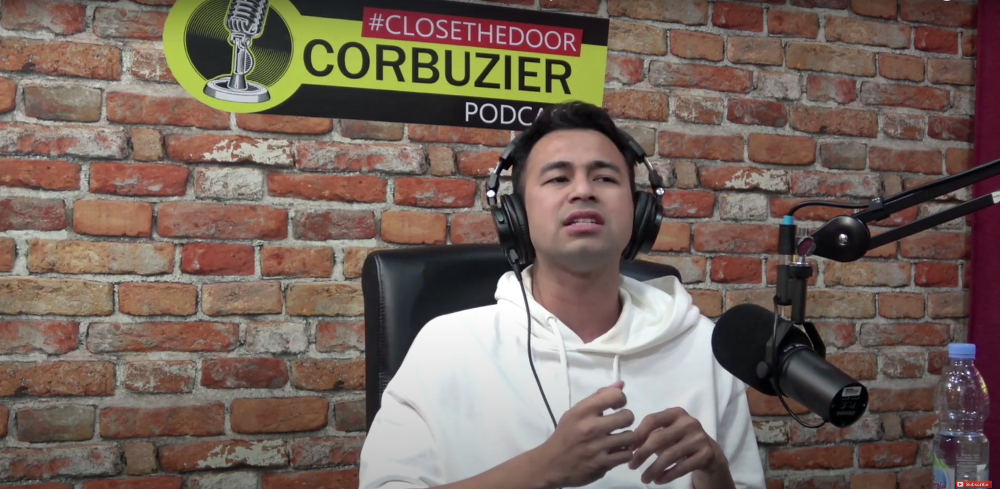
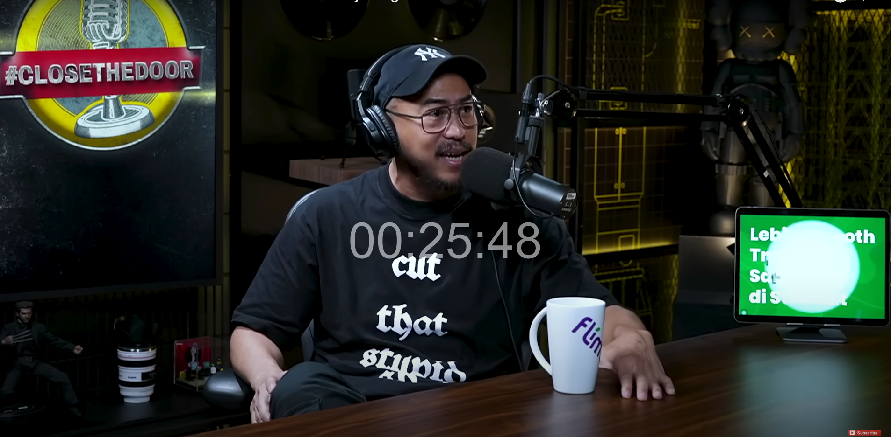
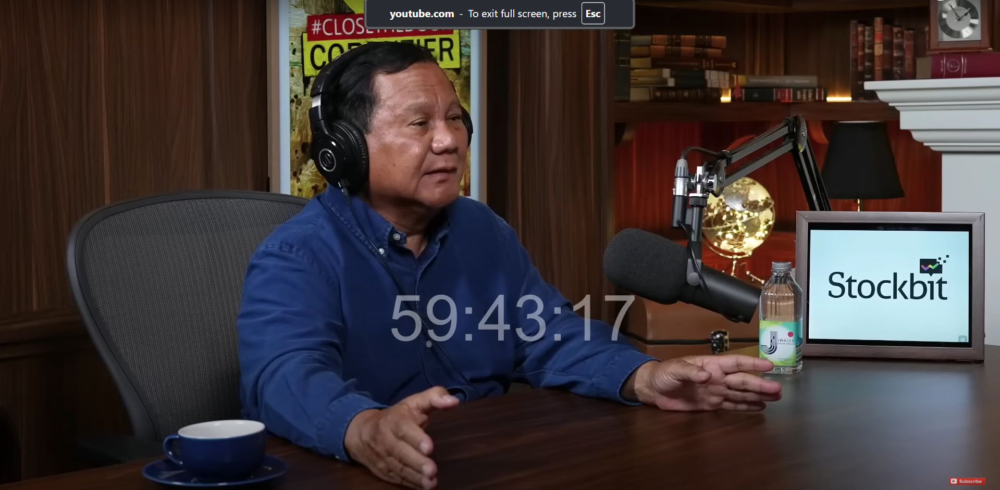

Podcast Deddy Corbuzier

Tentang Podcast
Deddy Corbuzier's Podcast adalah salah satu podcast paling populer di Indonesia. Dipandu oleh Deddy Corbuzier sendiri, podcast ini menghadirkan berbagai topik menarik dan tamu-tamu terkenal dari berbagai bidang.
Fitur Utama:
- Wawancara mendalam dengan tokoh-tokoh terkenal
- Diskusi tentang isu-isu terkini
- Sharing pengalaman dan tips dari Deddy Corbuzier
- Interaksi dengan pendengar melalui sesi tanya jawab
Episode Terbaru

Episode 1: Wawancara dengan Raffi Ahmad
Deddy Corbuzier berbincang-bincang dengan Raffi Ahmad tentang karir dan kehidupan pribadinya.
Dengarkan Sekarang

Episode 2: Wawancara dengan Panji Pragiwaksono
Deddy Corbuzier membahas tentang pentingnya kesehatan mental dan bagaimana cara menjaganya.
Dengarkan Sekarang

Episode 3: Sharing Pengalaman dengan Prabowo Subianto
Prabowo Subianto membagikan kisahnya di dunia militer hingga menjadi pejabat di pemerintahan.
Dengarkan Sekarang